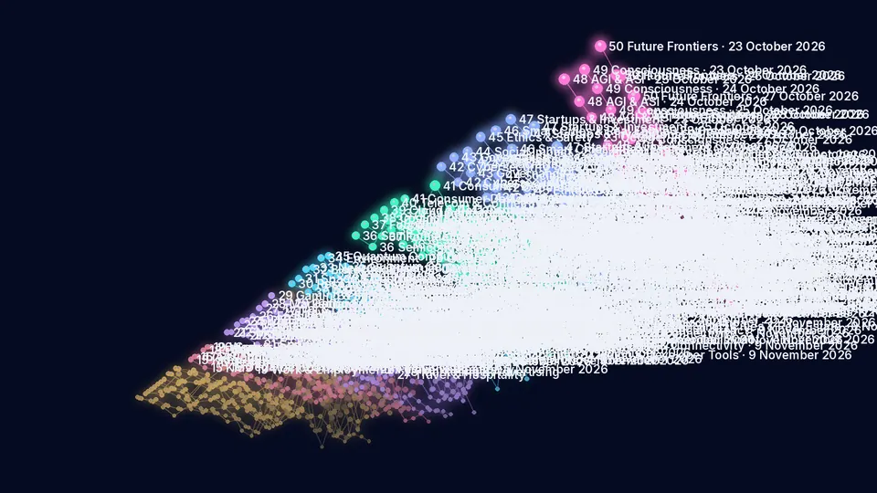

Journal of the AI Universe
AI trends
What the daily issues have covered, from 18 October 2026 to 13 November 2026 (27 issues).
Category activity in 3D
Each ribbon is one of the 50 categories over recent issues (time runs left to right, height is the number of news and research items). Drag to rotate. The charts and tables below give the same figures as a list.

News and research items per issue, by group
- Industries & Sectors
- People & Life Stages
- Culture & Belief
- Science
- AI Tech Stack
- Society & Governance
- Future & Frontier
Data table: items per issue by group
| Group | 18 Oct | 19 Oct | 20 Oct | 21 Oct | 22 Oct | 23 Oct | 24 Oct | 25 Oct | 26 Oct | 27 Oct | 28 Oct | 29 Oct | 30 Oct | 31 Oct | 1 Nov | 2 Nov | 3 Nov | 4 Nov | 5 Nov | 6 Nov | 7 Nov | 8 Nov | 9 Nov | 10 Nov | 11 Nov | 12 Nov | 13 Nov | Total |
|---|---|---|---|---|---|---|---|---|---|---|---|---|---|---|---|---|---|---|---|---|---|---|---|---|---|---|---|---|
| Industries & Sectors | 81 | 65 | 57 | 47 | 62 | 30 | 32 | 50 | 25 | 81 | 82 | 70 | 87 | 61 | 43 | 22 | 304 | 291 | 367 | 385 | 346 | 225 | 104 | 318 | 353 | 360 | 302 | 4250 |
| People & Life Stages | 32 | 20 | 25 | 11 | 24 | 10 | 12 | 16 | 12 | 30 | 29 | 22 | 27 | 20 | 16 | 12 | 74 | 80 | 107 | 109 | 99 | 69 | 46 | 95 | 100 | 94 | 88 | 1279 |
| Culture & Belief | 47 | 33 | 34 | 20 | 20 | 16 | 21 | 24 | 7 | 30 | 40 | 47 | 44 | 45 | 10 | 7 | 103 | 97 | 145 | 102 | 91 | 52 | 25 | 93 | 114 | 103 | 100 | 1470 |
| Science | 34 | 25 | 23 | 14 | 26 | 14 | 12 | 19 | 12 | 27 | 22 | 29 | 25 | 24 | 11 | 10 | 75 | 63 | 137 | 129 | 124 | 84 | 64 | 107 | 105 | 110 | 104 | 1429 |
| AI Tech Stack | 31 | 28 | 24 | 21 | 31 | 16 | 14 | 50 | 33 | 70 | 72 | 65 | 69 | 68 | 45 | 22 | 142 | 123 | 189 | 173 | 175 | 105 | 73 | 170 | 176 | 170 | 147 | 2302 |
| Society & Governance | 33 | 24 | 22 | 19 | 29 | 15 | 16 | 37 | 16 | 44 | 43 | 36 | 45 | 39 | 27 | 11 | 148 | 140 | 181 | 176 | 154 | 84 | 45 | 131 | 150 | 137 | 135 | 1937 |
| Future & Frontier | 18 | 10 | 10 | 6 | 6 | 6 | 6 | 12 | 5 | 19 | 17 | 16 | 14 | 18 | 12 | 4 | 39 | 36 | 55 | 38 | 32 | 20 | 6 | 27 | 36 | 32 | 17 | 517 |
| All groups | 276 | 205 | 195 | 138 | 198 | 107 | 113 | 208 | 110 | 301 | 305 | 285 | 311 | 275 | 164 | 88 | 885 | 830 | 1181 | 1112 | 1021 | 639 | 363 | 941 | 1034 | 1006 | 893 | 13184 |
Busiest categories
Data table: news and research items per category and issue
| Category | 18 Oct | 19 Oct | 20 Oct | 21 Oct | 22 Oct | 23 Oct | 24 Oct | 25 Oct | 26 Oct | 27 Oct | 28 Oct | 29 Oct | 30 Oct | 31 Oct | 1 Nov | 2 Nov | 3 Nov | 4 Nov | 5 Nov | 6 Nov | 7 Nov | 8 Nov | 9 Nov | 10 Nov | 11 Nov | 12 Nov | 13 Nov | Total |
|---|---|---|---|---|---|---|---|---|---|---|---|---|---|---|---|---|---|---|---|---|---|---|---|---|---|---|---|---|
| 01 AI Filmmaking | 6 | 6 | 4 | 4 | 5 | 3 | 3 | 2 | 0 | 5 | 5 | 6 | 8 | 6 | 1 | 0 | 24 | 24 | 15 | 23 | 24 | 22 | 9 | 22 | 34 | 20 | 10 | 291 |
| 02 AI Agriculture | 6 | 6 | 6 | 5 | 3 | 2 | 2 | 2 | 2 | 3 | 3 | 4 | 4 | 4 | 2 | 1 | 13 | 8 | 12 | 25 | 23 | 10 | 9 | 24 | 22 | 23 | 21 | 245 |
| 03 AI Defence | 6 | 4 | 5 | 3 | 3 | 1 | 2 | 1 | 1 | 4 | 3 | 3 | 1 | 3 | 1 | 0 | 11 | 15 | 10 | 11 | 12 | 7 | 1 | 15 | 10 | 8 | 14 | 155 |
| 04 AI Healthcare | 5 | 6 | 5 | 4 | 8 | 2 | 4 | 12 | 4 | 12 | 12 | 12 | 12 | 11 | 12 | 5 | 64 | 50 | 71 | 68 | 64 | 33 | 25 | 57 | 77 | 75 | 68 | 778 |
| 05 AI Finance | 6 | 5 | 5 | 5 | 3 | 2 | 2 | 8 | 3 | 12 | 12 | 5 | 12 | 5 | 3 | 1 | 37 | 39 | 45 | 45 | 45 | 27 | 7 | 33 | 24 | 39 | 34 | 464 |
| 06 AI Law & Investigation | 5 | 4 | 4 | 4 | 3 | 2 | 3 | 2 | 0 | 5 | 6 | 5 | 9 | 5 | 3 | 0 | 24 | 24 | 30 | 24 | 30 | 20 | 4 | 29 | 30 | 30 | 27 | 332 |
| 07 AI Commerce | 6 | 4 | 3 | 3 | 5 | 2 | 2 | 3 | 0 | 8 | 8 | 5 | 6 | 4 | 2 | 0 | 23 | 24 | 30 | 30 | 15 | 12 | 4 | 15 | 28 | 26 | 13 | 281 |
| 08 AI Journalism | 6 | 4 | 3 | 1 | 3 | 2 | 2 | 3 | 0 | 2 | 3 | 3 | 3 | 1 | 2 | 0 | 7 | 8 | 25 | 20 | 16 | 12 | 4 | 11 | 8 | 23 | 8 | 180 |
| 09 AI Architecture | 7 | 3 | 2 | 2 | 3 | 2 | 1 | 0 | 1 | 2 | 0 | 1 | 3 | 1 | 1 | 0 | 4 | 7 | 6 | 7 | 4 | 1 | 0 | 4 | 4 | 3 | 5 | 74 |
| 10 AI Engineering | 7 | 4 | 4 | 3 | 5 | 2 | 2 | 7 | 6 | 12 | 12 | 12 | 12 | 7 | 7 | 7 | 16 | 14 | 27 | 30 | 22 | 21 | 2 | 19 | 26 | 24 | 30 | 340 |
| 11 AI Robotics | 5 | 5 | 5 | 5 | 7 | 3 | 2 | 3 | 2 | 7 | 4 | 6 | 5 | 5 | 1 | 4 | 24 | 22 | 40 | 40 | 40 | 29 | 17 | 40 | 40 | 40 | 32 | 433 |
| 12 AI Energy | 5 | 4 | 4 | 2 | 4 | 2 | 1 | 2 | 2 | 3 | 6 | 3 | 2 | 3 | 3 | 1 | 24 | 19 | 20 | 21 | 17 | 12 | 3 | 13 | 15 | 17 | 13 | 221 |
| 13 AI Transportation | 6 | 5 | 3 | 4 | 6 | 3 | 3 | 2 | 2 | 3 | 5 | 3 | 7 | 2 | 2 | 1 | 9 | 13 | 17 | 26 | 18 | 15 | 12 | 26 | 19 | 20 | 12 | 244 |
| 14 AI Manufacturing | 5 | 5 | 4 | 2 | 4 | 2 | 3 | 3 | 2 | 3 | 3 | 2 | 3 | 4 | 3 | 2 | 24 | 24 | 19 | 15 | 16 | 4 | 7 | 10 | 16 | 12 | 15 | 212 |
| 15 AI Kids | 5 | 4 | 3 | 0 | 5 | 2 | 1 | 2 | 2 | 2 | 2 | 2 | 2 | 3 | 2 | 2 | 9 | 10 | 12 | 14 | 14 | 4 | 10 | 10 | 13 | 12 | 12 | 159 |
| 16 AI Geriatric | 5 | 2 | 6 | 3 | 5 | 2 | 2 | 2 | 2 | 2 | 2 | 2 | 2 | 2 | 2 | 2 | 5 | 6 | 18 | 8 | 7 | 4 | 7 | 10 | 9 | 11 | 9 | 137 |
| 17 AI Psychology | 6 | 2 | 4 | 3 | 4 | 1 | 1 | 2 | 2 | 5 | 5 | 3 | 6 | 2 | 4 | 2 | 9 | 12 | 15 | 19 | 12 | 15 | 11 | 16 | 17 | 17 | 18 | 213 |
| 18 AI Education | 6 | 4 | 3 | 2 | 3 | 2 | 3 | 5 | 4 | 9 | 8 | 5 | 5 | 5 | 4 | 3 | 24 | 24 | 30 | 30 | 30 | 27 | 11 | 29 | 28 | 21 | 21 | 346 |
| 19 AI Work & Employment | 5 | 4 | 4 | 1 | 4 | 2 | 3 | 4 | 0 | 9 | 7 | 7 | 9 | 6 | 3 | 1 | 24 | 24 | 27 | 26 | 27 | 15 | 7 | 28 | 28 | 30 | 24 | 329 |
| 20 AI Sports & Fitness | 5 | 4 | 5 | 2 | 3 | 1 | 2 | 1 | 2 | 3 | 5 | 3 | 3 | 2 | 1 | 2 | 3 | 4 | 5 | 12 | 9 | 4 | 0 | 2 | 5 | 3 | 4 | 95 |
| 21 AI Spirituality | 5 | 3 | 3 | 1 | 2 | 2 | 3 | 2 | 0 | 2 | 2 | 2 | 6 | 5 | 0 | 0 | 9 | 5 | 2 | 3 | 4 | 1 | 1 | 3 | 4 | 3 | 2 | 75 |
| 22 AI Mythology | 3 | 3 | 2 | 1 | 1 | 1 | 2 | 4 | 1 | 0 | 4 | 2 | 1 | 0 | 0 | 0 | 4 | 2 | 10 | 0 | 4 | 3 | 2 | 2 | 3 | 3 | 4 | 62 |
| 23 AI Music & Arts | 6 | 3 | 4 | 3 | 3 | 2 | 3 | 4 | 1 | 7 | 4 | 5 | 4 | 10 | 2 | 2 | 16 | 10 | 21 | 10 | 20 | 14 | 8 | 14 | 19 | 16 | 9 | 220 |
| 24 AI Literature | 7 | 4 | 4 | 2 | 2 | 2 | 1 | 1 | 0 | 3 | 3 | 3 | 2 | 4 | 0 | 0 | 8 | 7 | 11 | 6 | 7 | 3 | 3 | 6 | 9 | 13 | 11 | 122 |
| 25 AI Languages & Translation | 5 | 4 | 3 | 4 | 4 | 1 | 3 | 2 | 3 | 4 | 6 | 5 | 7 | 7 | 4 | 2 | 15 | 13 | 21 | 16 | 22 | 8 | 3 | 24 | 21 | 20 | 19 | 246 |
| 26 AI Fashion & Beauty | 5 | 5 | 5 | 2 | 2 | 1 | 2 | 3 | 0 | 2 | 11 | 6 | 4 | 2 | 1 | 0 | 8 | 13 | 12 | 9 | 3 | 3 | 2 | 5 | 7 | 1 | 9 | 123 |
| 27 AI Travel & Hospitality | 5 | 2 | 3 | 2 | 1 | 2 | 3 | 0 | 0 | 1 | 1 | 4 | 4 | 3 | 0 | 0 | 6 | 10 | 22 | 22 | 6 | 5 | 2 | 6 | 10 | 15 | 12 | 147 |
| 28 AI Marketing & Advertising | 5 | 3 | 5 | 2 | 1 | 2 | 1 | 3 | 1 | 5 | 5 | 12 | 10 | 6 | 2 | 0 | 20 | 24 | 29 | 23 | 8 | 6 | 0 | 18 | 22 | 13 | 18 | 244 |
| 29 AI Gaming & Immersive Worlds | 6 | 6 | 5 | 3 | 4 | 3 | 3 | 5 | 1 | 6 | 4 | 8 | 6 | 8 | 1 | 3 | 17 | 13 | 17 | 13 | 17 | 9 | 4 | 15 | 19 | 19 | 16 | 231 |
| 30 AI Research & Innovation | 3 | 4 | 4 | 2 | 3 | 2 | 2 | 5 | 2 | 7 | 8 | 4 | 8 | 6 | 3 | 2 | 16 | 16 | 40 | 38 | 37 | 23 | 22 | 28 | 24 | 25 | 24 | 358 |
| 31 AI Space & Cosmos | 7 | 3 | 4 | 1 | 4 | 2 | 2 | 2 | 2 | 2 | 3 | 2 | 2 | 2 | 1 | 2 | 13 | 9 | 12 | 10 | 10 | 4 | 0 | 11 | 9 | 10 | 7 | 136 |
| 32 AI Biotechnology | 7 | 5 | 5 | 2 | 5 | 3 | 2 | 2 | 2 | 4 | 2 | 7 | 4 | 5 | 2 | 2 | 13 | 10 | 28 | 37 | 29 | 21 | 20 | 28 | 24 | 25 | 28 | 322 |
| 33 AI Neuroscience | 5 | 5 | 2 | 3 | 4 | 2 | 3 | 4 | 3 | 9 | 5 | 6 | 3 | 5 | 2 | 2 | 10 | 10 | 21 | 17 | 13 | 12 | 10 | 14 | 13 | 17 | 16 | 216 |
| 34 AI Environment | 5 | 5 | 3 | 4 | 5 | 3 | 1 | 2 | 2 | 2 | 2 | 3 | 3 | 2 | 3 | 2 | 15 | 10 | 21 | 19 | 23 | 14 | 12 | 14 | 13 | 16 | 17 | 221 |
| 35 AI Quantum Computing | 7 | 3 | 5 | 2 | 5 | 2 | 2 | 4 | 1 | 3 | 2 | 7 | 5 | 4 | 0 | 0 | 8 | 8 | 15 | 8 | 12 | 10 | 0 | 12 | 22 | 17 | 12 | 176 |
| 36 AI Semiconductors | 5 | 4 | 4 | 3 | 5 | 2 | 2 | 12 | 8 | 12 | 12 | 12 | 12 | 12 | 8 | 6 | 24 | 24 | 30 | 30 | 30 | 17 | 5 | 30 | 30 | 30 | 25 | 394 |
| 37 AI Foundation Models & Assistants | 6 | 5 | 4 | 4 | 5 | 3 | 3 | 12 | 10 | 12 | 12 | 12 | 12 | 12 | 12 | 11 | 36 | 33 | 49 | 51 | 51 | 35 | 29 | 45 | 53 | 54 | 48 | 619 |
| 38 AI Coding & Developer Tools | 6 | 5 | 3 | 3 | 5 | 3 | 3 | 7 | 2 | 12 | 12 | 5 | 11 | 12 | 6 | 1 | 14 | 8 | 21 | 16 | 17 | 6 | 3 | 20 | 17 | 18 | 10 | 246 |
| 39 AI Cloud & Data Centres | 4 | 5 | 6 | 4 | 6 | 3 | 2 | 4 | 2 | 12 | 12 | 12 | 12 | 12 | 5 | 2 | 24 | 24 | 30 | 30 | 30 | 24 | 17 | 30 | 30 | 30 | 22 | 394 |
| 40 AI Telecom & Connectivity | 5 | 5 | 3 | 3 | 5 | 3 | 2 | 3 | 2 | 10 | 12 | 12 | 10 | 8 | 3 | 0 | 20 | 10 | 29 | 18 | 20 | 6 | 4 | 19 | 17 | 15 | 19 | 263 |
| 41 AI Consumer Devices & Wearables | 5 | 4 | 4 | 4 | 5 | 2 | 2 | 12 | 9 | 12 | 12 | 12 | 12 | 12 | 11 | 2 | 24 | 24 | 30 | 28 | 27 | 17 | 15 | 26 | 29 | 23 | 23 | 386 |
| 42 AI Cybersecurity | 6 | 4 | 5 | 4 | 6 | 3 | 3 | 12 | 6 | 12 | 12 | 12 | 12 | 12 | 11 | 1 | 39 | 39 | 45 | 45 | 45 | 19 | 11 | 31 | 38 | 34 | 33 | 500 |
| 43 AI Governance | 6 | 3 | 3 | 2 | 5 | 3 | 3 | 4 | 4 | 5 | 7 | 2 | 6 | 6 | 2 | 2 | 39 | 23 | 45 | 45 | 30 | 25 | 10 | 30 | 34 | 28 | 34 | 406 |
| 44 AI Social Impact | 5 | 4 | 4 | 3 | 3 | 2 | 3 | 4 | 2 | 5 | 4 | 4 | 3 | 3 | 0 | 1 | 11 | 7 | 11 | 8 | 11 | 6 | 2 | 9 | 3 | 10 | 6 | 134 |
| 45 AI Ethics & Safety | 5 | 4 | 3 | 3 | 5 | 3 | 2 | 6 | 2 | 2 | 4 | 2 | 8 | 2 | 3 | 4 | 11 | 14 | 22 | 28 | 15 | 15 | 12 | 20 | 26 | 14 | 16 | 251 |
| 46 AI Smart Cities & Real Estate | 6 | 5 | 5 | 5 | 4 | 2 | 2 | 2 | 2 | 8 | 4 | 6 | 4 | 4 | 3 | 0 | 11 | 18 | 15 | 10 | 18 | 8 | 1 | 10 | 11 | 11 | 10 | 185 |
| 47 AI Startups & Investment | 5 | 4 | 2 | 2 | 6 | 2 | 3 | 9 | 0 | 12 | 12 | 10 | 12 | 12 | 8 | 3 | 37 | 39 | 43 | 40 | 35 | 11 | 9 | 31 | 38 | 40 | 36 | 461 |
| 48 AI AGI & ASI | 6 | 3 | 3 | 2 | 2 | 2 | 2 | 3 | 1 | 3 | 3 | 2 | 2 | 2 | 0 | 0 | 9 | 5 | 19 | 10 | 8 | 3 | 0 | 8 | 12 | 11 | 5 | 126 |
| 49 AI Consciousness | 6 | 3 | 4 | 1 | 1 | 1 | 2 | 2 | 1 | 4 | 2 | 2 | 2 | 4 | 1 | 0 | 13 | 7 | 9 | 3 | 5 | 10 | 1 | 3 | 9 | 5 | 2 | 103 |
| 50 AI Future Frontiers | 6 | 4 | 3 | 3 | 3 | 3 | 2 | 7 | 3 | 12 | 12 | 12 | 10 | 12 | 11 | 4 | 17 | 24 | 27 | 25 | 19 | 7 | 5 | 16 | 15 | 16 | 10 | 288 |
Most-mentioned companies and organisations
Data table: most-mentioned companies and organisations per issue
| Name | 18 Oct | 19 Oct | 20 Oct | 21 Oct | 22 Oct | 23 Oct | 24 Oct | 25 Oct | 26 Oct | 27 Oct | 28 Oct | 29 Oct | 30 Oct | 31 Oct | 1 Nov | 2 Nov | 3 Nov | 4 Nov | 5 Nov | 6 Nov | 7 Nov | 8 Nov | 9 Nov | 10 Nov | 11 Nov | 12 Nov | 13 Nov | Total |
|---|---|---|---|---|---|---|---|---|---|---|---|---|---|---|---|---|---|---|---|---|---|---|---|---|---|---|---|---|
| OpenAI | 12 | 9 | 6 | 1 | 5 | 6 | 6 | 10 | 3 | 8 | 6 | 7 | 7 | 4 | 10 | 9 | 27 | 19 | 24 | 29 | 19 | 15 | 6 | 7 | 27 | 19 | 15 | 316 |
| NVIDIA | 8 | 3 | 6 | 4 | 12 | 3 | 6 | 4 | 4 | 6 | 6 | 6 | 7 | 1 | 1 | 1 | 7 | 8 | 5 | 17 | 12 | 5 | 6 | 38 | 26 | 31 | 47 | 280 |
| Google / Alphabet / DeepMind | 9 | 3 | 4 | 4 | 3 | 1 | 3 | 4 | 4 | 1 | 4 | 9 | 10 | 7 | 4 | 2 | 21 | 27 | 27 | 17 | 13 | 6 | 2 | 18 | 19 | 21 | 28 | 271 |
| Anthropic | 10 | 5 | 4 | 3 | 6 | 2 | 5 | 5 | 3 | 10 | 7 | 1 | 3 | 1 | 5 | 0 | 17 | 22 | 14 | 14 | 25 | 7 | 3 | 14 | 33 | 28 | 18 | 265 |
| Amazon / AWS | 2 | 1 | 2 | 2 | 1 | 0 | 0 | 2 | 0 | 2 | 3 | 5 | 4 | 4 | 3 | 0 | 6 | 8 | 6 | 11 | 12 | 7 | 2 | 12 | 11 | 12 | 9 | 127 |
| Meta | 5 | 1 | 2 | 4 | 2 | 2 | 1 | 0 | 1 | 2 | 1 | 5 | 3 | 3 | 2 | 1 | 7 | 7 | 9 | 7 | 6 | 4 | 4 | 12 | 10 | 4 | 8 | 113 |
| Microsoft | 1 | 2 | 0 | 0 | 1 | 1 | 2 | 3 | 1 | 6 | 4 | 2 | 2 | 1 | 4 | 0 | 12 | 7 | 9 | 4 | 6 | 6 | 4 | 7 | 5 | 9 | 4 | 103 |
| Apple | 1 | 0 | 0 | 0 | 0 | 0 | 0 | 2 | 1 | 1 | 5 | 1 | 1 | 2 | 1 | 0 | 9 | 9 | 13 | 12 | 4 | 2 | 4 | 7 | 7 | 2 | 1 | 85 |
| AMD | 2 | 1 | 1 | 1 | 3 | 0 | 1 | 0 | 0 | 1 | 0 | 1 | 0 | 0 | 0 | 0 | 0 | 5 | 8 | 5 | 2 | 2 | 1 | 5 | 7 | 1 | 5 | 52 |
| Samsung | 2 | 0 | 2 | 1 | 0 | 0 | 0 | 0 | 1 | 1 | 0 | 0 | 1 | 1 | 1 | 0 | 3 | 0 | 1 | 1 | 4 | 0 | 2 | 6 | 2 | 1 | 7 | 37 |
| Adobe | 1 | 0 | 0 | 0 | 0 | 1 | 2 | 0 | 0 | 0 | 0 | 0 | 0 | 0 | 0 | 1 | 2 | 0 | 2 | 0 | 0 | 0 | 0 | 6 | 8 | 4 | 3 | 30 |
| US FDA | 1 | 1 | 4 | 2 | 1 | 0 | 2 | 0 | 0 | 0 | 0 | 0 | 0 | 1 | 0 | 0 | 0 | 2 | 4 | 1 | 1 | 1 | 0 | 2 | 0 | 0 | 0 | 23 |
| Tencent | 0 | 0 | 0 | 0 | 0 | 0 | 0 | 0 | 0 | 0 | 0 | 0 | 1 | 0 | 0 | 0 | 1 | 0 | 7 | 5 | 0 | 1 | 2 | 3 | 0 | 0 | 1 | 21 |
| IBM | 1 | 1 | 0 | 0 | 1 | 0 | 0 | 0 | 0 | 0 | 0 | 0 | 0 | 0 | 0 | 0 | 1 | 0 | 2 | 1 | 1 | 1 | 0 | 1 | 3 | 3 | 3 | 19 |
| Intel | 1 | 0 | 0 | 1 | 2 | 0 | 0 | 0 | 0 | 0 | 0 | 0 | 1 | 1 | 1 | 0 | 3 | 2 | 0 | 1 | 0 | 0 | 0 | 0 | 2 | 1 | 2 | 18 |
Key topics
Data table: key topics per issue
| Name | 18 Oct | 19 Oct | 20 Oct | 21 Oct | 22 Oct | 23 Oct | 24 Oct | 25 Oct | 26 Oct | 27 Oct | 28 Oct | 29 Oct | 30 Oct | 31 Oct | 1 Nov | 2 Nov | 3 Nov | 4 Nov | 5 Nov | 6 Nov | 7 Nov | 8 Nov | 9 Nov | 10 Nov | 11 Nov | 12 Nov | 13 Nov | Total |
|---|---|---|---|---|---|---|---|---|---|---|---|---|---|---|---|---|---|---|---|---|---|---|---|---|---|---|---|---|
| AI agents | 32 | 20 | 25 | 17 | 19 | 12 | 11 | 28 | 6 | 20 | 19 | 14 | 27 | 25 | 8 | 4 | 41 | 48 | 84 | 66 | 53 | 45 | 18 | 61 | 77 | 66 | 56 | 902 |
| Large language models | 15 | 13 | 21 | 13 | 12 | 7 | 1 | 14 | 8 | 13 | 16 | 12 | 15 | 10 | 7 | 3 | 25 | 27 | 71 | 51 | 43 | 41 | 10 | 57 | 59 | 53 | 41 | 658 |
| Data centres | 4 | 7 | 8 | 3 | 6 | 4 | 2 | 3 | 2 | 5 | 5 | 5 | 7 | 7 | 4 | 1 | 21 | 17 | 28 | 29 | 28 | 20 | 18 | 18 | 25 | 20 | 15 | 312 |
| Reinforcement learning | 1 | 0 | 2 | 3 | 1 | 0 | 0 | 9 | 1 | 5 | 3 | 3 | 3 | 4 | 2 | 1 | 6 | 8 | 13 | 14 | 14 | 12 | 5 | 19 | 14 | 20 | 14 | 177 |
| Benchmarks | 10 | 11 | 7 | 4 | 12 | 1 | 3 | 4 | 1 | 2 | 5 | 1 | 2 | 3 | 2 | 1 | 2 | 6 | 17 | 4 | 11 | 8 | 3 | 11 | 11 | 5 | 9 | 156 |
| Cardiology | 0 | 4 | 2 | 1 | 3 | 0 | 0 | 0 | 2 | 4 | 1 | 0 | 0 | 0 | 3 | 0 | 1 | 4 | 6 | 5 | 25 | 7 | 24 | 5 | 11 | 4 | 3 | 115 |
| Humanoid robots | 5 | 8 | 4 | 5 | 3 | 1 | 2 | 1 | 0 | 1 | 0 | 0 | 1 | 0 | 0 | 0 | 3 | 2 | 7 | 13 | 11 | 5 | 8 | 8 | 10 | 6 | 6 | 110 |
| AI chips and GPUs | 2 | 2 | 3 | 0 | 2 | 3 | 0 | 2 | 2 | 2 | 3 | 3 | 3 | 2 | 1 | 1 | 4 | 5 | 9 | 8 | 3 | 4 | 2 | 15 | 7 | 12 | 7 | 107 |
| Autonomous vehicles | 7 | 4 | 2 | 3 | 0 | 2 | 1 | 1 | 0 | 1 | 1 | 0 | 0 | 1 | 0 | 0 | 1 | 1 | 5 | 8 | 6 | 12 | 5 | 15 | 7 | 8 | 3 | 94 |
| Medical imaging | 2 | 3 | 2 | 0 | 3 | 1 | 1 | 0 | 1 | 0 | 2 | 0 | 1 | 1 | 2 | 0 | 0 | 4 | 5 | 6 | 5 | 1 | 5 | 2 | 5 | 8 | 5 | 65 |
| Drug discovery | 2 | 4 | 1 | 1 | 0 | 0 | 0 | 0 | 0 | 0 | 0 | 1 | 1 | 1 | 0 | 1 | 2 | 1 | 6 | 6 | 6 | 2 | 2 | 5 | 4 | 5 | 5 | 56 |
| Open-source and open-weight AI | 3 | 2 | 0 | 2 | 2 | 3 | 2 | 1 | 0 | 1 | 2 | 0 | 1 | 1 | 0 | 2 | 1 | 2 | 6 | 5 | 2 | 2 | 1 | 4 | 2 | 2 | 2 | 51 |
Counts are news and research items (events are not counted). Companies and topics are matched conservatively on explicit names in each item’s headline and summary (see topics and companies). Updated automatically with every issue.